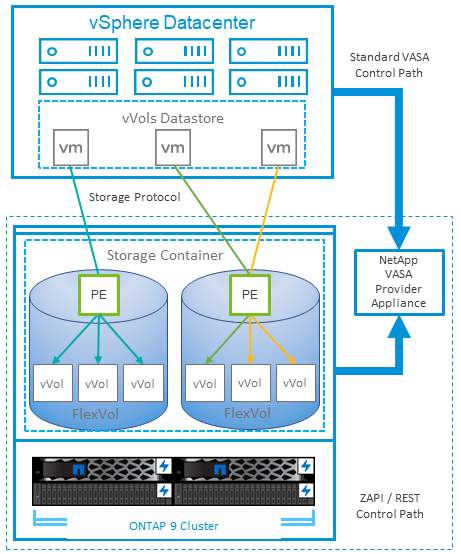
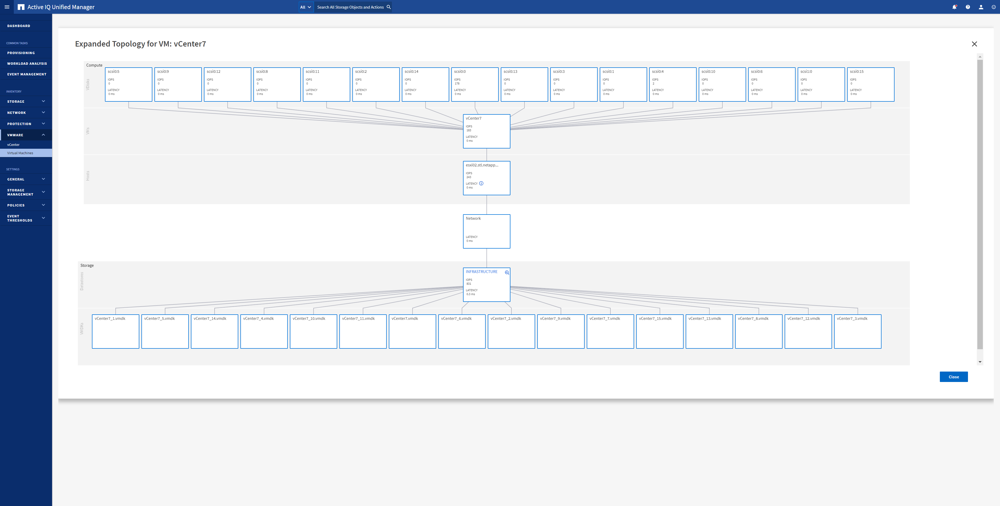

Microsoft SQL Server
Microsoft SQL Server
服務品質（QoS）
 建議變更
建議變更
執行ONTAP 支援功能的系統可使用ONTAP 「支援服務品質」功能、限制檔案、LUN、磁碟區或整個SVM等不同儲存物件的每秒處理量（以Mbps和/或I/O（IOPS）為單位）。
處理量限制可在部署前控制未知工作負載或測試工作負載、以確保不會影響其他工作負載。它們也可用於在識別出高效能工作負載之後加以限制。也支援以IOPS為基礎的最低服務層級、以提供一致的效能、適用於ONTAP VMware的SAN物件、以及ONTAP 支援VMware的NAS物件。
有了NFS資料存放區、QoS原則可套用至FlexVol 整個VMware磁碟區或其中的個別VMDK檔案。使用ONTAP 使用VMware LUN的VMFS資料存放區時、QoS原則可套用至FlexVol 包含LUN或個別LUN的VMware磁碟區、但不能套用個別VMDK檔案、因為ONTAP VMware對VMFS檔案系統沒有任何認知。使用vVols時、可使用儲存功能設定檔和VM儲存原則、在個別VM上設定最低和/或最高QoS。
物件的QoS最大處理量限制可設定為Mbps和/或IOPS。如果兩者皆使用、ONTAP 則由支援執行第一個上限。工作負載可以包含多個物件、QoS原則也可以套用至一或多個工作負載。當原則套用至多個工作負載時、工作負載會共用原則的總限制。不支援巢狀物件（例如、磁碟區內的檔案無法各自擁有自己的原則）。QoS最低值只能以IOPS設定。
下列工具目前可用於管理ONTAP 不實的QoS原則、並將其套用至物件：
-
CLI ONTAP
-
系統管理程式ONTAP
-
OnCommand Workflow Automation
-
Active IQ Unified Manager
-
NetApp PowerShell Toolkit for ONTAP
-
VMware vSphere VASA Provider適用的工具ONTAP
若要將QoS原則指派給NFS上的VMDK、請注意下列準則：
-
原則必須套用至
vmname- flat.vmdk其中包含實際的虛擬磁碟映像、而非vmname.vmdk（虛擬磁碟描述元檔案）或vmname.vmx（ VM 描述元檔案）。 -
請勿將原則套用至其他 VM 檔案、例如虛擬交換檔案 (
vmname.vswp）。 -
使用 vSphere Web 用戶端尋找檔案路徑（資料存放區 > 檔案）時、請注意它會結合的資訊
- flat.vmdk和. vmdk只要顯示一個檔案、其中包含的名稱即可. vmdk但是的大小- flat.vmdk。新增-flat輸入檔案名稱以取得正確路徑。
若要將QoS原則指派給LUN、包括VMFS和RDM、ONTAP 顯示為Vserver的SVM、LUN路徑和序號、可從ONTAP VMware vSphere的「VMware vSphere的VMware vSphere」（VMware vSphere）「VMware vCenter工具」首頁上的「儲存系統」功能表取得。選取儲存系統（ SVM ）、然後選取相關物件 > SAN 。 使用ONTAP 其中一項功能來指定QoS時、請使用此方法。
利用ONTAP VMware vSphere或Virtual Storage Console 7.1及更新版本的VMware vSphere或Virtual Storage Console 7.1工具、可輕鬆將最大和最小QoS指派給VVol型VM。為 vVol 容器建立儲存功能設定檔時、請在效能功能下指定最大和 / 或最小 IOPS 值、然後使用 VM 的儲存原則參考此 SCP 。建立VM或將原則套用至現有VM時、請使用此原則。
使用VMware vSphere 9.8及更新版本的VMware vSphere 9.8版的VMware VMware vCenter資料存放區提供增強的QoS功能。FlexGroup ONTAP您可以輕鬆地在資料存放區或特定VM的所有VM上設定QoS。如FlexGroup 需詳細資訊、請參閱本報告的「參考資料」一節。
QoS和VMware SIOC ONTAP
VMware vSphere儲存I/O控制（SIOC）是相輔相成的技術、vSphere和儲存管理員可以搭配使用、來管理執行VMware軟體之系統上所託管vSphere VM的效能。ONTAP ONTAP每個工具都有自己的優點、如下表所示。由於VMware vCenter和ONTAP VMware vCenter的範圍不同、有些物件可由一個系統來查看和管理、而非由另一個系統來管理。
| 屬性 | QoS ONTAP | VMware SIOC |
|---|---|---|
當作用中時 |
原則永遠處於作用中狀態 |
存在爭用時作用中（超過臨界值的資料存放區延遲） |
單位類型 |
IOPS、Mbps |
IOPS、共享 |
vCenter或應用程式範圍 |
多個vCenter環境、其他Hypervisor和應用程式 |
單一vCenter伺服器 |
在VM上設定QoS？ |
僅NFS上的VMDK |
NFS或VMFS上的VMDK |
設定LUN上的QoS（RDM）？ |
是的 |
否 |
在LUN（VMFS）上設定QoS？ |
是的 |
否 |
在Volume（NFS資料存放區）上設定QoS？ |
是的 |
否 |
在SVM（租戶）上設定QoS？ |
是的 |
否 |
以原則為基礎的方法？ |
是；可由原則中的所有工作負載共用、或完全套用至原則中的每個工作負載。 |
是、使用vSphere 6.5及更新版本。 |
需要授權 |
隨附ONTAP 於此功能 |
Enterprise Plus |
VMware Storage Distributed Resource Scheduler
VMware儲存分散式資源排程器（SDR）是vSphere功能、可根據目前的I/O延遲和空間使用量、將VM放置在儲存設備上。接著、它會在資料存放區叢集中的資料存放區之間（也稱為Pod）、在不中斷營運的情況下移動VM或VMDK、並選取將VM或VMDK置於資料存放區叢集中的最佳資料存放區。資料存放區叢集是類似資料存放區的集合、從 vSphere 管理員的觀點來看、這些資料存放區會彙總成單一使用量單位。
將SDR搭配適用於ONTAP VMware vSphere的NetApp VMware版資訊工具使用時、您必須先使用外掛程式建立資料存放區、使用vCenter建立資料存放區叢集、然後將資料存放區新增至其中。建立資料存放區叢集之後、可直接從「詳細資料」頁面上的資源配置精靈、將其他資料存放區新增至資料存放區叢集。
SDR的ONTAP 其他最佳實務做法包括：
-
叢集中的所有資料存放區都應該使用相同類型的儲存設備（例如SAS、SATA或SSD）、無論是所有VMFS或NFS資料存放區、都具有相同的複寫和保護設定。
-
請考慮在預設（手動）模式下使用SDR。此方法可讓您檢閱建議、並決定是否要套用建議。請注意VMDK移轉的下列影響：
-
當SDR在資料存放區之間移動VMDK時、ONTAP 任何從還原複製或重複資料刪除所節省的空間都會遺失。您可以重新執行重複資料刪除、以重新獲得這些節約效益。
-
在 SDR 移動 VMDK 之後、 NetApp 建議在來源資料存放區重新建立快照、因為其他情況下空間會被移動的 VM 鎖定。
-
在同一個集合體上的資料存放區之間移動VMDK並沒有什麼好處、而且SDR無法看到可能共用該集合體的其他工作負載。
-
儲存原則型管理和 vVols
VMware vSphere API for Storage感知（VASA）可讓儲存管理員輕鬆設定具有明確定義功能的資料存放區、並讓VM管理員在需要時使用這些功能來配置VM、而不需要彼此互動。請看一下這種方法、瞭解它如何簡化虛擬化儲存作業、並避免許多瑣碎的工作。
在VASA之前、VM管理員可以定義VM儲存原則、但他們必須與儲存管理員合作、以識別適當的資料存放區、通常是使用文件或命名慣例。有了VASA、儲存管理員可以定義一系列的儲存功能、包括效能、分層、加密及複寫。一組磁碟區或一組磁碟區的功能稱為儲存功能設定檔（scp）。
SCP 支援虛擬機器資料 VVols 的最低和 / 或最高 QoS 。只AFF 有在不支援的系統上才支援最低QoS。VMware vSphere的VMware vSphere工具包含儀表板、可顯示VM精細的效能、以及在VMware系統上用於vVols的邏輯容量。ONTAP ONTAP
下圖說明ONTAP VMware vSphere 9.8 vVols儀表板的各項功能。

定義儲存功能設定檔之後、就可以使用識別其需求的儲存原則來配置VM。VM儲存原則與資料存放區儲存功能設定檔之間的對應、可讓vCenter顯示相容資料存放區清單以供選擇。這種方法稱為儲存原則型管理。
VASA提供查詢儲存設備的技術、並將一組儲存功能傳回vCenter。VASA廠商供應商會提供儲存系統API與架構之間的轉譯、以及vCenter所瞭解的VMware API。NetApp 的 VASA Provider for ONTAP 是 ONTAP 工具的一部分、適用於 VMware vSphere 應用裝置 VM 、 vCenter 外掛程式則提供介面、可配置及管理 vVol 資料存放區、並可定義儲存功能設定檔（ CDP ）。
支援VMFS和NFS vVol資料存放區。ONTAP將vVols與SAN資料存放區搭配使用、可帶來NFS的部分效益、例如VM層級的精細度。以下是一些最佳實務做法、您可以在中找到更多資訊 "TR-4400"：
-
VVol資料存放區可由FlexVol 多個叢集節點上的多個支援功能區所組成。最簡單的方法是單一資料存放區、即使磁碟區具有不同的功能也一樣。SPBM可確保VM使用相容的Volume。然而、這些磁碟區必須全部屬於ONTAP 單一的一套功能、並使用單一傳輸協定來存取。每個節點的每個傳輸協定只需一個LIF就足夠了。避免在ONTAP 單一VVol資料存放區中使用多個版本的支援、因為儲存功能可能因版本而異。
-
使用ONTAP VMware vSphere外掛程式的VMware vCenter工具來建立及管理VVol資料存放區。除了管理資料存放區及其設定檔之外、它還會自動建立傳輸協定端點、以便在需要時存取vVols。如果使用LUN、請注意LUN PE是使用LUN ID 300以上的LUN來對應。確認 ESXi 主機進階系統設定
Disk.MaxLUN允許大於 300 的 LUN ID 號碼（預設值為 1,024 ）。若要執行此步驟、請在 vCenter 中選取 ESXi 主機、然後選取「設定」索引標籤、再選取「尋找」Disk.MaxLUN在進階系統設定清單中。 -
請勿安裝或移轉VASA Provider、vCenter Server（應用裝置或Windows）或ONTAP VMware vSphere的各種支援工具到vVols資料存放區、因為這些工具彼此相依、因此在停電或其他資料中心中斷時、您無法管理這些工具。
-
定期備份VASA Provider VM。至少要為包含 VASA Provider 的傳統資料存放區建立每小時快照。如需保護及恢復VASA Provider的詳細資訊、請參閱此 "知識庫文章"。
下圖顯示vVols元件。

雲端移轉與備份
另一ONTAP 項優勢是廣泛支援混合雲、將內部部署私有雲中的系統與公有雲功能合併在一起。以下是一些可搭配vSphere使用的NetApp雲端解決方案：
-
* 雲端 Volume 。 * NetApp Cloud Volumes Service for Amazon Web Services 或 Google Cloud Platform 和 Azure NetApp Files for anf 可在領先業界的公有雲環境中、提供高效能、多重傳輸協定的託管儲存服務。VMware Cloud VM來賓可以直接使用。
-
*《NetApp》資料管理軟體可在您選擇的雲端上、為您的資料提供控制、保護、靈活度及效率。Cloud Volumes ONTAP Cloud Volumes ONTAPNetApp是以NetApp解決方案儲存軟體為建置基礎的雲端原生資料管理軟體。Cloud Volumes ONTAP ONTAP搭配Cloud Manager一起使用、即可部署Cloud Volumes ONTAP 及管理包含ONTAP 內部部署的各種系統的不二執行個體。利用先進的 NAS 和 iSCSI SAN 功能、搭配整合式資料管理、包括快照和 SnapMirror 複寫。
-
* Cloud Services。*使用Cloud Backup Service NetApp或SnapMirror Cloud、利用公有雲儲存設備保護內部部署系統的資料。可協助您在NAS、物件儲存區和物件儲存區之間移轉及保持資料同步。Cloud Sync Cloud Volumes Service
-
* FabricPool 《》FabricPool *《》《》提供快速且簡單的ONTAP 資料分層功能。冷區塊可移轉至公有雲或私有 StorageGRID 物件存放區中的物件存放區、並在再次存取 ONTAP 資料時自動重新叫用。或是將物件層用作SnapVault 已由效益管理的資料的第三層保護。您可以使用這種方法 "儲存更多 VM 快照" 在一線ONTAP 和/或二線的不二元儲存系統上。
-
《》。*使用NetApp軟體定義的儲存設備、將您的私有雲端延伸至遠端設施和辦公室、您可以使用《》來支援區塊和檔案服務、以及您在企業資料中心擁有的相同vSphere資料管理功能。ONTAP Select ONTAP Select
在設計VM型應用程式時、請考慮未來的雲端行動力。例如、應用程式和資料檔案不會放在一起、而是使用個別的LUN或NFS匯出來匯出資料。這可讓您將VM和資料分別移轉至雲端服務。
vSphere資料加密
如今、透過加密保護閒置資料的需求與日俱增。雖然最初的重點是財務和醫療資訊、但無論資訊儲存在檔案、資料庫或其他資料類型中、都越來越有興趣保護所有資訊。
執行ONTAP 此軟體的系統可透過閒置加密、輕鬆保護任何資料。NetApp儲存加密（NSE）使用自我加密的磁碟機ONTAP 搭配使用、以保護SAN和NAS資料。NetApp也提供NetApp Volume Encryption和NetApp Aggregate Encryption、這是一種簡單、以軟體為基礎的方法、可加密任何磁碟機上的磁碟區。此軟體加密不需要特殊的磁碟機或外部金鑰管理員、 ONTAP 客戶可免費使用。您可以在不中斷用戶端或應用程式的情況下升級及開始使用、而且它們已通過FIPS 140-2第1級標準驗證、包括內建金鑰管理程式。
有幾種方法可以保護在VMware vSphere上執行的虛擬化應用程式資料。其中一種方法是在客體作業系統層級使用VM內部的軟體來保護資料。vSphere 6.5等較新的Hypervisor現在也支援VM層級的加密、這是另一種替代方案。不過、NetApp軟體加密既簡單又簡單、而且具有下列優點：
-
*對虛擬伺服器CPU沒有影響。*某些虛擬伺服器環境需要其應用程式的每個可用CPU週期、但測試顯示、Hypervisor層級加密需要高達5倍的CPU資源。即使加密軟體支援 Intel 的 AES-NI 指令集來卸載加密工作負載（如同 NetApp 軟體加密一樣）、由於新的 CPU 與舊版伺服器不相容、因此這種方法可能不可行。
-
隨附機上金鑰管理程式。 NetApp軟體加密包含內建金鑰管理程式、不需額外付費、因此無需購買和使用複雜的高可用度金鑰管理伺服器、即可輕鬆開始使用。
-
*對儲存效率沒有影響。*目前廣泛使用重複資料刪除與壓縮等儲存效率技術、是以具成本效益的方式使用Flash磁碟媒體的關鍵。不過、加密資料通常無法進行重複資料刪除或壓縮。NetApp硬體與儲存加密的運作層級較低、可充分運用領先業界的NetApp儲存效率功能、不像其他方法。
-
*輕鬆進行資料存放區精細加密。*有了NetApp Volume Encryption、每個磁碟區都能獲得自己的AES 256位元金鑰。如果您需要變更、只要使用一個命令即可。如果您有多個租戶、或需要證明不同部門或應用程式的獨立加密、這種方法非常適合。這種加密是在資料存放區層級進行管理、比管理個別VM容易得多。
開始使用軟體加密非常簡單。安裝授權之後、只要指定通關密碼、即可設定內建金鑰管理程式、然後建立新的磁碟區、或是執行儲存端磁碟區移轉、即可啟用加密功能。NetApp正致力於在未來的VMware工具版本中、為加密功能提供更多整合式支援。
Active IQ Unified Manager
利用VMware Infrastructure、您可以清楚掌握虛擬基礎架構中的虛擬機器、並監控及疑難排解虛擬環境中的儲存與效能問題。Active IQ Unified Manager
典型的虛擬基礎架構部署ONTAP 在整個運算、網路和儲存層之間、有許多不同的元件。VM應用程式中的任何效能延遲都可能是因為各個元件在各個層面上所面臨的延遲問題。
下列螢幕快照顯示Active IQ Unified Manager 「VMware虛擬機器」檢視畫面。

Unified Manager會在拓撲檢視中呈現虛擬環境的底層子系統、以判斷運算節點、網路或儲存設備是否發生延遲問題。此檢視也會強調導致效能延遲的特定物件、以便採取補救步驟並解決根本問題。
下列螢幕快照顯示AIQUM擴充拓撲。
